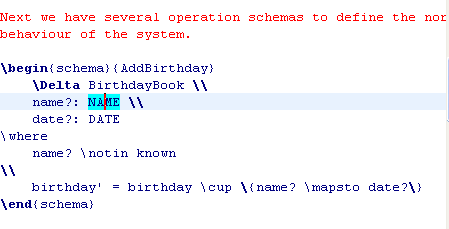

Position the cursor within a term. For example, the below figure shows that the cursor is positioned within the name "NAME".

Select the menu entry Edit > Highlight > Enclosing Term.
To highlight a Z term in the editor, you can follow the follow two steps:
Position the cursor within a term. For example, the below figure shows that the cursor is positioned within the name "NAME".
Select the menu entry Edit > Highlight > Enclosing Term.
Then the smallest term containing the cursor position is highlighted in the editor as show below.

If you want to highlight a bigger term, just perform the highlight command continuely. The biggest term tha can be highlighted is a Z paragraph. If a Z paragraph is already highlighted, then this command does nothing.
The Edit > Highlight > Restore Last Highlight does the reverse way of highlight. If the currently highlighted term is term that was highlighted at first, then this command does nothing.
You can also start the highlight procedure from a bigger term, rather than a point, by selecting a bigger segment of text before performing the highlight command.